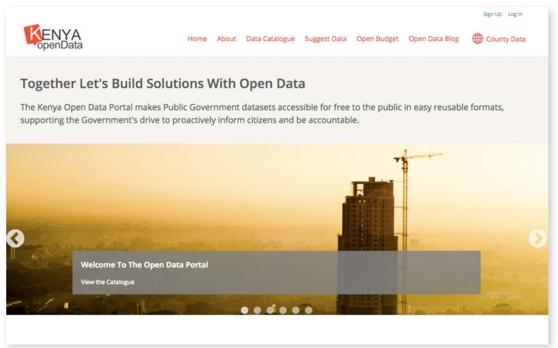
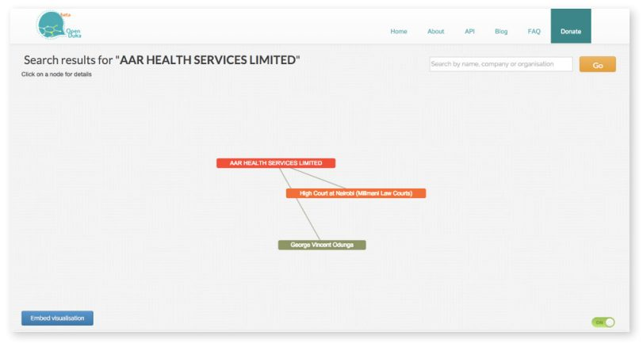
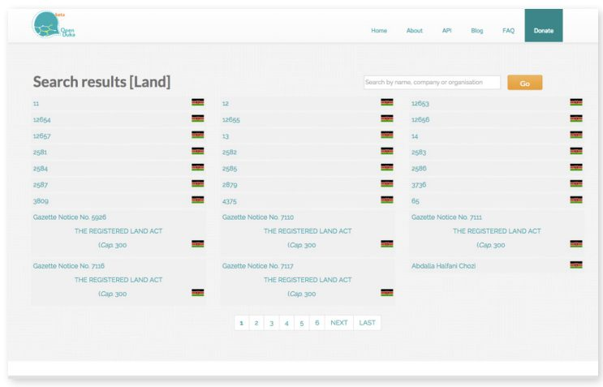

Open Duka پلتفرمی است که توسط سازمان جامعه مدنی موسسه Open توسعهیافته است که هدف آن رسیدگی به مسائل عدم شفافیت در حاکمیت در بخشهای خصوصی و عمومی، ترویج پاسخگویی شرکت و شفافیت است. به عنوان یک مطالعه موردی، چالش برای اقدامات دادهباز برای ایجاد آگاهی کافی و استفاده ضروری برای دستیابی به تاثیر را نشان میدهد. Open Duka برای شهروندان، روزنامهنگاران و فعالان مدنی ابزاری فراهم میکند که به روابط، ارتباطات (و تا حدودی پویایی) افراد داخل و اطراف عرصه عمومی بینش میدهد. این پلتفرم توانایی ایجاد و تجسم روابط بین نهادهای مختلف اعم از سازمانها، افراد، مناقصات و قراردادهای اعطا شده را دارد. در حالی که انواع عقبنشینیها منجر به تاثیرات محدود تا به امروز شدهاست، پلتفرم به دنبال عمل به عنوان مجموعه داده اصلی ذینفعان را قادر به ایجاد شفافیت عمومی شخص ثالث و برنامهها یا خدمات پاسخگویی عمومی، با اجازه دادن به آنها برای عبور از داده Open Duka در مقابل دیگر مجموعههای داده ایجاب میکند.
برخی از دادههایی که در Open Duka یافت میشوند شامل اطلاعات منتشر شده در روزنامه کنیا، یک نشریه هفتگی منتشر شده توسط دولت کنیا است که اخطارهای قانون جدید، اخطارهای مورد نیاز برای انتشار توسط قانون یا سیاست و اعلامیه برای اطلاعات عمومی را منتشر میکند.
- اقدامات مرتبط با منابع دادهباز میتوانند مدبر و زمانبر باشند. تفکیک کردن دادهها، ایجاد مشارکت، توسعه فنآوری و دیگر مراحل مهم میتواند نیاز به تلاش بیشتری نسبت به آنچه که در اصل برنامهریزی شدهاست داشته باشد، که منجر به زمان طولانی قبل از احساس هرگونه تاثیر واقعی میشود.
- دادههای در دسترس همیشه کافی نیستند. مشارکت شهروندان، تلاشهای توسعه و آموزش - بدون در نظر گرفتن ظرفیت فنآوری یا سواد جامعه هدف در مورد دادهها - میتواند محرکهای مهم استفاده برای پلتفرمهای دادهباز باشد.
- تغییرات سیاسی و فرهنگی میتوانند ابتکارات دادهباز را دچار تحول کنند، حتی اگر، در ظاهر، به نظر نرسد که مستقیما پروژه را تحتتاثیر قرار میدهند. توسعه یک پلتفرم دادهباز، برنامه کاربردی یا خدمات، اغلب نیازمند یک اکوسیستم دادهباز حمایتی برای رسیدن به پتانسیل کامل آن است.
۱. پیشینه و زمینه
فساد در کنیا
فساد در کنیا یک مشکل عمده است و شواهد بسیاری حاکی از بدتر شدن این مشکل است. سازمان تعیین شفافیت بینالمللی در سال ۲۰۱۴ این کشور را در فهرست ادراک فساد سالانه خود در رده ۱۴۵ (از مجموع ۱۷۵ مورد) قرار داد که دو سال پیش از آن ۱۳۶ مورد کاهش داشتهاست. اخیرا، یک حسابرسی رسمی دریافت که تنها ۱ درصد از هزینههای دولت به درستی در نظر گرفته شدهاند. یک شهروند کنیایی به طور متوسط ۱۶ رشوه در ماه می پردازد. هنگامی که باراک اوباما در اواسط سال ۲۰۱۵ از این کشور دیدار کرد، او در مورد «سرطان فساد» هشدار داد که کشور را از بین میبرد.
داده باز و فنآوری در کنیا
آیا دادههای باز - و به طور کلیتر فناوری - میتوانند راهحلی ارائه دهند؟ کنیا به طور کلی به عنوان یکی از پیشرفتهترین کشورها در آفریقا در نظر گرفته میشود. از سال ۲۰۱۴، کنیا با ۲۱.۳ میلیون کاربر، چهارمین ضریب نفوذ اینترنت در آفریقا را داشت که تنها پس از نیجریه، مصر و آفریقای جنوبی قرار داشت. همچنین تا سال ۲۰۱۴، تقریبا ۸۰ درصد از کنیاییها که صاحب تلفن همراه بودند (حدود سهچهارم جمعیت) از آنها برای پرداخت هزینههای تلفن همراه و بانکداری استفاده میکردند.
این کشور در سال ۲۰۰۵ از پتانسیل منابع دادهباز در مبارزه با فساد استقبال کرد. دکتر بیتانگه نودمو، استاد کارآفرینی و روشهای تحقیق در دانشکده تجارت دانشگاه نایروبی، با دولت مووای کیباکی رئیسجمهور سابق برای کشف تخصیص غیرقانونی بودجه دولت از طریق ترسیم نقشه توزیع صندوقهای توسعه مشارکت (CDF) همکاری کرد. CDF ها قرار بود توسعه مردمی را تحریک کنند و منابع را به طور برابر در سراسر کشور توزیع کنند. این مانور نقشهبرداری که براساس دادههای بسته قبلی ساخته شدهبود، نشان داد که بودجه به شدت به مناطق غنی کشور در مناطق بیشتر شایسته اختصاص داده شدهاست. با این حال، علیرغم نتایج امیدوارکننده آن، این تلاش اولیه برای استفاده از داده باز با مخالفت سیاسی مواجه شد و به زودی متوقف شد. نودمو به یاد میآورد: «[ سیاستمداران ] از دست من بسیار عصبانی بودند و ما در مدت بسیار کوتاهی این وبسایت را کنار گذاشتیم.»
در سال ۲۰۱۱، نودمو، تا آن زمان وزیر دائمی اطلاعات و ارتباطات در دولت، با نیروی کار داوطلب پرسنل فنی و مقامات بانک جهانی برای راهاندازی یک پروژه جدید - اقدام دادهباز کنیا - کار میکرد. محور اصلی این اقدام، درگاه دادهباز کنیا (https://opendata.go.ke/) بود، که اولین پلتفرم دادهباز جامع در کشورهای جنوب صحرای آفریقا (و دومین پلتفرم در آفریقا، پس از مراکش) بود. این درگاه بیش از ۴۰۰ مجموعه داده از سراسر دولت را میزبانی میکند، از جمله دادههای سرشماری ملی، دادههای مربوط به هزینههای ملی و منطقهای، و اطلاعات مربوط به خدمات عمومی کلیدی مانند آموزش، بهداشت و کشاورزی.
تعیین اینکه آیا اقدام منابع دادهباز گسترده کنیا، و به ویژه درگاه داده، تاثیری داشتهاست یا خیر، با توجه به سیگنالهای متناقض، دشوار است. از یک سو، دیدگاه ۴۴ میلیون صفحه این درگاه از آگوست ۲۰۱۵، به عنوان مثال، به یک پلتفرم موثر و پرکاربرد اشاره میکند. حتی مهمتر از تعداد صفحات نمایش، Lent Kwamboka، هماهنگکننده پروژه دادهباز، اعلام کرد که کاربران با داده یافتشده در پورتال - از طریق دانلود و تعبیه - ۲.۶ میلیون بار تعامل داشتهاند.
گفته میشود، قبل از این مراحل مهم، منتقدان این سوال را مطرح کردند که اطلاعات موجود در پلتفرم تا چه حد نیازهای کاربران را هدف قرار دادهاست. به عنوان مثال، یک بررسی در سال ۲۰۱۴ از کاربران مربوطه نشان داد که تقریبا ۵۰ درصد از دادههای آموزشی مورد نظر در این درگاه وجود ندارد. فقدان بسیاری از انواع دادههای بالقوه مفید، با در نظر گرفتن تعداد بخشهای دولتی که هنوز داده خود را باز نکردهاند، تعجبآور نیست. از سال ۲۰۱۵، چهار سال پس از راهاندازی رسمی این پورتال، این سایت تنها دادههای ۲۶ دپارتمان دولتی از بیش از ۸۳ دپارتمان دولتی را دریافت کردهاست.

فضای سیاسی و قانونی در کنیا نیز تا حدی در مورد دادهباز مبهم باقی میماند. در سال ۲۰۱۳ رئیسجمهور اوهورو کنیاتا به عنوان چهارمین رئیسجمهور کنیا انتخاب شد. منشور انتخاباتی حزب جوبیلی او «وعده داده بود که شفافیت در دولت را افزایش داده و اشتراک اطلاعات را در موسسات عمومی ترویج دهد.» این بیانیه همچنین بر اهمیت دیجیتالیسازی بهبودیافته دولت تاکید کرد، از جمله «تفکیک و مدیریت پایگاههای داده که در مکانی امن و متمرکز ذخیره خواهند شد و میتوانند توسط همه وزارتخانهها و شاخههای دولت برای کارآمدتر کردن دولت مورد دسترسی و استفاده قرار گیرند.»
همه اینها منجر به ایجاد امیدهایی در میان دادههایباز و فعالان شفافیت دولت شد. بلافاصله پس از آن خوشبینی اولیه، از بین رفت. در سال ۲۰۱۳، بنیاد نور خورشید مقالهای در مورد «چرا درگاه دادهباز کنیا در حال شکست است» منتشر کرد. بسیاری از دلایلی که ذکر شد - مانند بیمیلی دولت برای بازکردن همه دادهها و چالشهای بالقوه مفید مربوط به تفویض اختیارات قانونی کشور - مسائل مشابهی را برای Open Duka ایجاد کردند که در ادامه به آنها خواهیم پرداخت. با این حال، شایانذکر است که از سال ۲۰۱۳ شرایط زیادی برای این درگاه تغییر کردهاست و حتی در آن زمان، نویسنده این مقاله هنوز دلایل خوشبینی بلندمدت خود را بیان کردهاست. نبود چارچوب قانونی برای اجرای تضمین آزادی اطلاعات توسط قانون اساسی، به شرایط پیرامون درگاه دادهباز کمک نمیکند. اگرچه لایحه حقوق شامل این آزادی است، در واقع هیچ دستورالعمل روشنی برای هدایت چگونگی در دسترس قرار دادن اطلاعات توسط نهادهای دولتی، چه نوع اطلاعاتی باید منتشر شود و چه راهحلهایی برای نقض قوانین وجود دارد. با این گفته، افزایش استفاده از درگاه - که به نقاط عطف بازدید از سایت و دانلود داده مشاهدهشده در سال ۲۰۱۵ منتهی میشود - درسی برای نیاز به تکرار و تداوم به منظور تلاشهای داده باز برای حفظ آن است.
۲. توصیف و آغاز پروژه
حتی با اینکه دولت اقدامات مرتبط با منابع دادهباز خود را آغاز کردهاست، جامعه مدنی در کنیا به طور فزایندهای در این زمینه فعال شدهاست. بنا به گفته جی بهالا، مدیر موسسه Open، یک سازمان جامعه مدنی که "برای شفافیت مسائل دولت برای شهروندان" کار میکند، ابتکار داده باز خود دولت به عنوان یک کاتالیزور برای سازمانها [ مانند موسسه Open ] عمل میکند تا کار در منابع دادهباز را آغاز کند. او مثال Code4 کنیا را ذکر میکند که برای تسریع تقاضا برای منابع دادهباز با استفاده از مهارتهای داده در اتاقهای خبری آفریقا و سازمانهای مدنی کار میکند ".
Open Duka ("duka" به معنای "فروشگاه" در سواهیلی است) از علاقه جامعه مدنی به منابع دادهباز رشد کردهاست. این برنامه که در سال ۲۰۱۴ آغاز شد، حاوی دادههای مربوط به روابط میان موسسات، افراد و دیگر نهادها با تاثیر بر زندگی عمومی است. این پروژه توسط موسسه Open در مشارکت با شورای ملی گزارش قانون، با سرمایهگذاری ابتکار شفافیت آگاهانه فنآوری آفریقا هدایت میشود.
Open Duka براساس یک اصل ساده ساخته شدهاست: بنیانگذاران آن معتقدند که دادن اطلاعات به شهروندان که آنها را قادر میسازد تا ارتباط میان افراد و سازمانها را ترسیم کنند، میتواند بسیاری از موارد فساد را آشکار کرده و احتمالا اصلاح کند. الکاگز، موسس موسسه Open، اشاره میکند هر بار که یک رسوایی فساد جدید در کنیا رخ میدهد، شهروندان شروع به پرسیدن سوالات در مورد ارتباطات میکنند. چه کسی با چه کسی در ارتباط است؟ چه کسی صاحب شرکتهای نقشآفرین است، و این افراد چگونه با نهادهای دولتی یا دیگر نقشآفرینان در جایگاه قدرت ارتباط برقرار میکنند؟ او میگوید قبل از باز کردن دوکا، هیچ راهی برای کشف این نوع از «دادههای رابطهای» وجود نداشت که بتواند «شهروندان را قادر به ایجاد ارتباط بین مردم، مسائل، شرکتها و سازمانهای عمومی کند.»
بیانیه ماموریت open duka:
«فراهم کردن یک ابزار عملی و آسان برای شهروندان، روزنامهنگاران و فعالان مدنی برای درک ساختار مالکیت جهانی که در آن زندگی میکنند، و نشان دادن کاربردهای عملی اطلاعات در دسترس برای شهروندان عادی.»
این پلتفرم به خودی خود به دنبال ترسیم هیچ ارتباطی نیست؛ این سازمان فقط دادهها را پست میکند، با تکیه بر مهارتهای تحقیقی کاربران خود (و به طور اتفاقی) برای بیرون کشیدن لینکهایی که زمینهساز زندگی عمومی در کنیا هستند، و اغلب باعث فساد میشوند. همانطور که بهالا میگوید: " ما فقط داریم تمام دادههایی را که وجود دارند به دست میآوریم و آن را در اختیار مردم میگذاریم تا تصمیماتشان را بگیرند. ما "فقط دادهها را دریافت میکنیم، آنها را تغییر دهیم، آنها را در دسترس قرار میدهیم و میبینیم که چه ارتباطاتی به وجود میآیند و چه روندهایی را میتوان آموزش داد."
Kags مثال فرضی زیر را در مورد نحوه استفاده از Open Duka ذکر میکند. با استفاده از این پلتفرم، یک شهروند میتواند کشف کند که فرد A مدیر دو شرکت است. سپس او میتواند این حقیقت را کشف کند که برادر فرد A یک شرکت ثالث را اداره میکند، و همچنین با یک سازمان دولتی نیز در حال همکاری است. علاوه بر این، شهروند ممکن است تشخیص دهد که هر دو برادر با قاضی C به یک دانشکده رفتهاند. به این ترتیب، شهروند-کاربر Open Duka احتمالاً میتواند تعیین کند که آیا فرد A از ارتباطات خود (از طریق برادر یا قاضی) برای بهرهمندی نادرست از قراردادهای دولتی استفاده کرده است یا به هر شکل دیگری از فساد، درگیر شده است.
در مرکز آن، Open Duka پلتفرمی است که شهروندان را قادر میسازد تا پشت پوشش روابط ناشناخته (و غیرقابل شناخت) قبلی که انواع فعالیتهای اقتصادی و سیاسی، از جمله خرید زمین، قراردادهای مناقصه و دیگر تصمیمات قانونی را هدایت میکند، رقابت کنند. هنگام انتخاب یک شخص، سازمان، مناقصه، قرارداد، پرونده دادگاه یا قطعه زمین در سایت، Open Duka تجسم سادهای از چگونگی ارتباط آن نهاد با دیگران در پلتفرم، با دادههای طبقهبندیشده اضافی در مورد هر نهاد در تجسم نشاندادهشده در زیر فراهم میکند. کاگس میافزاید: «این روابط بر یکپارچگی یک کشور تاثیر میگذارند.»

منابع داده
تا آگوست ۲۰۱۵، Open Duka شامل اطلاعات ۳۰، ۹۵۵ نفر، ۳، ۸۳۲ سازمان، ۱، ۸۰۰ مناقصه، ۲۲۶ قرارداد، ۲۲، ۰۱۱ پرونده دادگاه و ۴۴۱۸ قطعه زمین میشود. کاربر میتواند هر یک از این شش حوزه را از یک نوار جستجوی ساده در صفحه اصلی جستجو کند، یا با کلیک بر روی یکی از شش مقوله محتوا وارد پلت فرم شود، که در آن نقطه او با یک لیست طولانی، قابل جستجو و الفبایی از نهادهای مربوطه ارائه میشود.

افزایش شفافیت در مورد سوابق به عنوان بخش مهمی از گزاره ارزش Open Duka دیده میشود. هدف این است که به افراد اجازه داده شود تا بین قطعات زمین (جایی که سرمایههای غیرقانونی اغلب قرار داده میشوند) و نهادها یا افرادی که ممکن است مالک مستقیم نباشند اما با این حال با مالکان زمین ارتباط دارند، ارتباط برقرار کنند. علاوه بر این، سازماندهندگان Open Duka گامهایی را برای وارد کردن اطلاعات نه تنها در مورد ذینفعان دولتی، بلکه در مورد شرکتهای خصوصی نیز برداشتهاند. دسترسی به این دادهها اغلب سختتر است، اما رسم ارتباطات لازم ضروری است. بنابراین، Open Duka شامل دادههای مربوط به قرارداد، اطلاعات مناقصه و مدیران شرکت است (از جمله اینکه آیا مدیران در هر پرونده دادگاهی درگیر هستند و آیا مالک زمین هستند یا خیر). کیگس اشاره میکند که تمرکز Open Duka فراتر از دولت گسترش مییابد، زیرا «اگر نمیدانید یک شرکت، سازمان جامعه مدنی، مدرسه، و غیره چه کاری انجام میدهند، در واقع نمیدانید آنها چه کار اشتباهی انجام میدهند و شما هیچ راهی برای افزودن ارزش ندارید.»
در حالی که برخی از این اطلاعات از پایگاههای داده دولتی در دسترس عموم سرچشمه میگیرند، سازماندهندگان Open Duka نیز تعدادی از اقدامات اضافی را برای تکمیل اطلاعات و جامعتر کردن پایگاههای داده خود به کار میگیرند. به طور خاص، Open Duka اطلاعات قابلتوجهی را از رسانهها، به ویژه از روزنامه کنیا (که حاوی اطلاعات تقریبا جامع در مورد انتقالها و خریدهای زمین است) جمعآوری میکند. قبل از راهاندازی Open Duka، Gazette با گوگل همکاری کرده بود تا تمام چاپهای خود را دیجیتالی کند. با این حال، در حالی که این اطلاعات در قالب دیجیتال در دسترس بود، به هیچ وجه قابل طبقهبندی یا قابل جستجو نبود. بنابراین سازماندهندگان Open Duka به دولت نزدیک شدند و از آنها خواستند تا به آرشیو دیجیتال مجله دسترسی داشته باشند که پس از آن وارد پلتفرم شد.
علیرغم نبوغ Open Duka در منبعیابی داده از منابع غیرآشکار، این پروژه به طور کلی با کمبود داده در دسترس دست و پنجه نرم میکند. با این حال، این کمبود داده منحصر به کنیا نیست. بهبود شفافیت در خصوص مالکیت ذینفع نهادهای قانونی - یعنی مالکان کسبوکار، سهامداران و مقامات ارشد مدیریت - یک اصل سطح بالا بود که از اجلاس ۲۰۱۴ G۲۰ در استرالیا، به نفع «جلوگیری از سوء استفاده از این نهادها برای اهداف غیرقانونی مانند فساد، فرار از مالیات و پولشویی بوجود آمد.» علیرغم اشتیاق رسمی دولت برای انتشار داده، سازماندهندگان آن میگویند که واقعیت اغلب کاملا متفاوت است. بهالا به پرونده وزارت کشور اشاره میکند، جایی که هنوز اطلاعات زیادی به دلیل منافع مقرره یا قوانین غیرقابلدسترس باقی ماندهاست، حتی اگر کم و بیش دیجیتالی شده باشد. همین امر در مورد بسیاری از بخشهای دیگر نیز صادق است. همانطور که او میگوید: «وقتی شما در حال انجام هر کاری در مورد شفافیت و پاسخگویی دولت هستید، درها اغلب به روی افرادی که سعی میکنند اطلاعات را به دست آورند بسته میشوند.»
۳. تاثیر
ذینفعان مورد نظر
میانگین شهروندان:
توانایی شناسایی و اجتناب از معاملات بالقوه فاسد در حوزههایی مانند قراردادها، خرید زمین را برای شهروندان فراهم میکند.
انجمن رسانه و تحقیق:
ارتباطات بین سهامداران و نقشآفرینان در جایگاه قدرت در کشور را آشکار میکند تا به شناسایی فساد یا تضاد منافع کمک کند.
تجزیه و تحلیلهای بزرگ مقیاس دادههای یافتشده در پلتفرم را برای کشف بینشهای سطح بالا ارائه میدهد.
توسعهدهندگان و فعالان مدنی و محققان
یک API احزاب علاقهمند را قادر میسازد تا داده Open Duka را در برنامههای کاربردی دیگر که بر شفافیت و پاسخگویی در بخشهای دولتی و خصوصی تمرکز دارند، وارد کنند.
با وجود وعده و هیجان قابلتوجه در مورد پتانسیل Open Duka، تاثیر آن در واقع تا به امروز کاملا محدود بودهاست. هیچ مطالعه سیستماتیکی در مورد تاثیر پروژه انجامنشده است، و داستانهای موفقیتی که وجود دارند تا حد زیادی حکایتی بودهاند (به عنوان مثال، بلالا به "روند موفقیت عجیب" اشاره میکند که در آن "برخی از افراد موفق شدند بفهمند که کسی سعی دارد با فروش یک قطعه زمین او را فریب دهد، و او موفق شد از Open Duka به عنوان پلتفرم استفاده کند تا بفهمد که این فرد کلاهبردار است." بهالا همچنین اشاره میکند که رسانهها از این پلتفرم سود بردهاند، اما برقراری ارتباط مستقیم بین بخشهای خبری در مورد فساد و استفاده روزنامهنگاران از Open Duka یک چالش است (و تا سال ۲۰۱۵، سایت هیچ نمونه روشنی از چنین کاربردهایی را ارائه نمیدهد). نودمو معتقد است که باید تلاش بیشتری برای بهبود سواد داده و ظرفیت رسانهها برای ایجاد تاثیرات به عنوان منابع مالی برای عموم مردم انجام شود. به جای تمرکز بر ارائه سرفصلهای احساسی، باید تمرکز بیشتری در رسانهها بر روی "انجام تحلیلی که میتواند به مردم در درک تصمیمگیری کمک کند" وجود داشته باشد. رسانهها فقط مجبور نیستند به عناوین نگاه کنند، آنها باید دادهها را ترکیب کنند و آن را بسیار سادهتر سازند، و برای این کار، ما باید ظرفیت زیادی در علم داده و تجسم دادهها داشته باشیم."
موفقیت محدود Open Duka را میتوان تا حد زیادی به چالشهای بسیاری نسبت داد که پروژه از زمان آغاز به کار خود با آنها مواجه شدهاست، به ویژه دشواری منبعیابی داده و موانع ناشی از حرکت اخیر به سمت واگذاری اختیارات دولتی (که در زیر توضیح داده شدهاست).
توجه به مفهوم باز یا در دسترس بودن
همانطور که مشخص است، بسیاری از تأثیرهای Open Duka کمتر به هدف خاص آن مرتبط بوده و عمومی تر است - یعنی گسترش ایده باز بودن و مسئولیتپذیری در بین بخشها. به عنوان مثال، ONE و آزمایشگاه پاسخگویی، سازمانهای جامعه مدنی بر مبارزه با فقر و فساد، ارائه اسکار صداقت که به «کار خلاقانه فعالان و سازمانهایی که با فساد جهانی مبارزه میکنند» احترام میگذارد. در سال ۲۰۱۵، Open Duka «بهترین اسکار» را براساس این که چگونه «شهروندان، روزنامهنگاران و فعالان مدنی را با یک ابزار عملی و آسان برای کمک به آنها در درک ساختار مالکیت دنیایی که در آن زندگی میکنند فراهم میکند» برنده شد. در ادامه مبحث این جوایز آمدهاست که Open Duka «به نشان دادن کاربرد عملی اطلاعات باز برای شهروندان سراسر جهان کمک میکند.»
۴. چالشها
همانطور که اشاره شد، Open Duka با موانع قابلتوجهی در تلاشهای خود برای استفاده از داده برای ایجاد ارتباط و کاهش فساد مواجه شدهاست. این بخش برخی از مهمترین چالشها را مورد بحث قرار میدهد.
تکامل دولت
در سال ۲۰۱۰، دولت کنیا تعدادی قدرت (از جمله قدرتهای مالی کلیدی) را به ۴۷ کشور واگذار کرد. در حالی که این تفویض اختیارات به عنوان راهی برای قدرتمند کردن جوامع محلی و برانگیختن توسعه مردمی مورد حمایت قرار گرفت، مشکلاتی را برای طرفداران دادهباز ایجاد کرد. برای مثال بهالا به پیچیدگی اکنون متقاعد کردن نمایندگان دولت در مورد مزایای شفافیت نه تنها در یک حوزه قضایی (یعنی در سطح فدرال) بلکه در ۴۷ حوزه اشاره میکند. و در حالی که موسسه Open در تلاش است تا با هر یک از این کشورها کار کند، او همچنین اشاره میکند که بسیاری از فرمانداران منطقه (و دیگر مقامات) برای مقابله با مسئولیتهای قدرت جدید خود تلاش میکنند. شاید جای تعجب نباشد که وقتی با ایجاد یک دولت محلی از ابتدا مواجه میشویم، در دسترس بودن دادهها، یک اولویت بالا نیست. با این حال، همانطور که در زیر توضیح داده شد، اگرچه فرآیند تفویض اختیارات دولت، موانع مهمی را برای پروژههای دادهباز و مسائلی مشابه به طور کلیتر ایجاد کرد، اما فرصتهای جدیدی را برای ایجاد ظرفیت داده شهرها در جهت منافع داخلی و عمومی فراهم میکند.
کیفیت داده و در دسترس بودن آن
همانطور که اشاره شد، فضای سیاسی و قانونی گستردهتر حول دادههای باز در کنیا به طور کامل دلگرمکننده یا حمایتی نیست. بسیاری از بخشهای دولتی هنوز دادههای خود را به طور کامل منتشر نکردهاند، و حتی زمانی که این کار را انجام میدهند، کیفیت دادهها میتواند کمتر از مقدار واقعی باشد. زمانی که اطلاعات پایگاهداده Open Duka را مرور میکنیم، چالش کیفیت داده را میتوان آشکار کرد - با برخی از مدخلهایی که دارای دو حرف یا عناوین گیجکننده هستند که از روزنامه کنیا جمعآوری شدهاند.
علاوه بر این، نودمو اشاره میکند که بسیاری از افسران دولتی در مقابل انتشار به موقع دادهها مقاومت میکنند، در نتیجه به موقع بودن و ارتباط اطلاعات کاهش مییابد. او به پرونده ماموران آمار ملی دولت اشاره میکند، که «فکر میکنند باید دادهها را جمعآوری کنند، و قبل از اینکه بتوانند ارائه دهند، آن را تصحیح کنند.» او اینگونه ادامه میدهد: «آماردانان به این نتیجه نرسیدهاند که افراد دیگری وجود دارند که میتوانند دادهها را مدیریت کنند. آنها فقط فکر میکنند که این داده ما است و اینها دادههای کامپیوتری هستند [ در جامعه دادهباز ] که در فرآیندها مداخله میکنند.» چنین «احتکار داده» توسط ماموران دولتی، رسیدن به مقیاسی که نیاز دارد را برای پروژهای مانند Open Duka بسیار دشوار میسازد.
اعتماد عمومی و انتظارات
چالش نهایی ناشی از عدم علاقه عمومی به دادههای باز و حتی احساس ناامیدی است. در طول سالها، کنیا شاهد هیچ کمبودی از تلاشها برای بهبود زندگی عمومی و کیفیت حکومت نبوده است. پیش از Open Duka نیز تلاشهای متعددی برای مبارزه با فساد صورتگرفته است. بسیاری از این تلاشها توسط نهادهای اهداکننده خارجی حمایت مالی شدهاند و با میزان افزایش قابلتوجهی همراه بودهاند. تعداد کمی از آنها مشکل بزرگی ایجاد کردهاند.
به گفته بهالا، این امر باعث ایجاد حس رهایی و بیاعتمادی در میان مردم میشود. او میگوید: «این مسئله به مرحلهای رسیدهاست که حتی اگر چیزی مفید وجود داشته باشد، عدم اعتماد زیادی وجود دارد.» بنابراین وظیفه و چالش Open Duka - نه تنها این است که ثابت کند این کار به خودی خود مفید است، بلکه این است که خود را از تلاشهای قبلی دور کند و زندگی عمومی را بهبود بخشد.
به طور کلی، این نگرانی وجود دارد که عدم اعتماد عمومی به دادههای باز میتواند فشار بر دولتها برای انتشار داده را کاهش دهد، در نتیجه یک چرخه معیوب ایجاد کرده و این بخش را به عنوان یک کل، تضعیف کند. Ndemo در مورد خطرات ناامیدی مردم و نبود تقاضا برای دادهباز صحبت میکند. او میگوید: «ما باید علاقه ایجاد کنیم.» ما باید تقاضا برای داده را ایجاد کنیم. «اگر ما نتوانیم این تقاضا را ایجاد کنیم، حتی اگر دولت آن را منتشر کند، اصلا معنی ندارد.» او در ادامه درباره نیاز به افزایش آگاهی عمومی و آموزش مردم درباره پتانسیل داده باز صحبت میکند.
۵. نگاهی به مسائل پیش رو
به طور کلی، سازماندهندگان Open Duka میگویند که این پروژه بسیار بیشتر از آنچه در اصل پیشبینی کرده بودند، متمرکز بر منابع و زمانبر بوده است. در میان سایر مسائل، سازماندهندگان دشواری منبعیابی دادهها، مقاومت دولت، و متقاعد کردن یک جمعیت تا حدودی ناامید برای استفاده از آن را دستکم گرفتند. در حالی که این پروژه در سال ۲۰۱۳ آغاز شد، بهالا خاطرنشان میکند که تا اوایل سال ۲۰۱۵ بود که از نظر فنی، «ما پلتفرم را به جایی که میخواستیم رساندیم.»
امروزه، سازماندهندگان پروژه بر آینده متمرکز هستند، با تعدادی جریان فعالیت در کارهایی که بر روی تبدیل خوشبینی و هیجان اولیه به نوع تاثیرات دنیای واقعی که تا به امروز طرفدار پلتفرم نبودهاند، تمرکز کردهاند. وظیفه تیم حاضر در پشت این پروژه، یادگیری از چالشهای ذکر شده در بالا و تکرار سریع و استراتژیک - علیرغم چالشهای مداوم بیرونی و محدودیتهای منابع - است. خوشبختانه، تیم Open Duka این نیاز را تشخیص میدهد و در سایت اشاره میکند که «Open Duka یک کار در حال پیشرفت (و کاری محبوب) برای ما است و ما باید به اضافه کردن ویژگیها و دادههای جدید ادامه دهیم.»
یک توسعه دلگرمکننده برای اکوسیستم دادهیباز کنیا به طور گستردهتر، شروع نسخه ۲.۰ از درگاه دادهیباز کنیا است، که در میان سایر چیزها، برای کمک به کاربران برای یافتن مکان پروژههای دونور و دولتی در جامعه خود و همچنین مرحله اجرا طراحی شدهاست.
برنامه استانی در دسترس یا باز
بهبود مرکزی پروژه Open Duka که در حال حاضر در دست توسعه است، برنامهای شهری و در دسترس میباشد. تحت این برنامه، که برای تسهیل برخی از چالشهای ناشی از تفویض اختیارات طراحی شدهاست، این تیم با دولتهای جدید استانی کار میکند تا ظرفیت داده خود را ایجاد کند و فرصتهای مشارکت شهروندان را پیش ببرد. به طور کلی، این تیم به دنبال ایجاد زمینههای جدید برای هماهنگی بین دولت استانها، سازمانهای غیر دولتی، رسانههای اجتماعی و سهامداران جامعه است.
این تلاش نه تنها به کشورها ظرفیت حاکمیت بهتر را میدهد، بلکه از نظر تئوری نیز مستقیما به نفع Open Duka خواهد بود. با ایجاد ظرفیت فنی برای شهرستانها، Open Duka به دادههای کیفیت بهروزرسانی شده و بارگذاریشده دائمی دسترسی پیدا میکند. در طرف تقاضا، مشارکت با ذینفعان خارجی به موسسه Open کمک خواهد کرد تا بازخورد متنوعی برای هدایت روند توسعه آتی به دست آورد. این پیوند عرضه و تقاضا، نشاندهنده گام بعدی امیدوارکنندهای است. اما بهالا اشاره میکند: «[این] بسیار نیازمند منابع است.»
در حال حاضر چند شهرستان وجود دارد که در آنها Open Duka هدایت این پروژه جدید را بر عهده دارد. تاکنون نتایج امیدوارکننده بودهاند. بهالا اشاره میکند که از طریق پروژه شهری دادههای باز، " داده منتشر میشود و اکنون ما میتوانیم آن داده را در سطح بسیار دقیق در Open Duka جای دهیم. علاوه بر این، با توجه به کد اساسی نسبتا ساده Open Duka، شهرستانها قادر خواهند بود تا تکرارهای منحصر به فرد پلتفرم را میزبانی کنند، به این معنا که داده سطح شهرستان وارد پلتفرم Open Duka مرکزی خواهد شد، اما میتواند پایهی نسخههای دقیقتر و منطقهای این ابزار را فراهم کند. بهالا معتقد است که وقتی Open Duka به این سطح از تقسیمبندی برسد، " شانس تاثیرگذاری بسیار بیشتر خواهد بود."
پیگیری معیارهای موفقیت
با اینکه شواهد اندکی در مورد تاثیر این موضوع بر روی Open Duka وجود دارد، اما توسعه و اجرای معیارهای عینی در حال انجام است. بهالا اشاره میکند که «ما به نماهای صفحه به عنوان یک معیار نگاه نمیکنیم.»در عوض، مؤسسه Open بر روی سه نوع معیار ساخته شده حول سه گروه مختلف کاربر تمرکز دارد:
با ردیابی تماسهای رابط برنامهنویسی برنامه کاربردی (API)، موسسه Open قادر خواهد بود مشخص کند که آیا توسعهدهندگان و فعالان مدنی در واقع از داده سایت برای ساخت برنامههای کاربردی استفاده میکنند، یا اگر محققان یا دیگر احزاب به طور عمده برای انجام تحلیلهای هدفمند به داده دسترسی دارند.
از سوی دیگر، تمرکز بر تعداد تجسمهای ایجاد شده از طریق Open Duka، به ارزیابی سودمندی سایت برای رسانهها کمک خواهد کرد. از آنجا که بعید است هر نمونه از یک روزنامهنگار با استفاده از Open Duka برای پیدا کردن اطلاعات برای یک روند معتبر باشد، پیگیری تعداد تعبیه مستقیم تجسمهای ایجاد شده در سایت به کسب درک بهتری از استفاده از آن در رسانهها کمک خواهد کرد.
در نهایت، تیم Open Duka شروع به پیگیری تعداد درخواستهای خارجی برای دادههای اضافی که باید به پلتفرم اضافه شوند، خواهد کرد. این میتواند نشانهای از استفاده و مشارکت شهروندان باشد. بهالا میگوید چنین درخواستهایی نشان خواهد داد که «مردم از این پلتفرم استفاده کردهاند و چیزی که به دنبالش هستند را پیدا نمیکنند.»
تبدیل پلتفرم به یک پلتفرم عملیتر
در حالی که کنیا به طور کلی به عنوان یک رهبر در نفوذ اینترنت در آفریقا در نظر گرفته میشود، با این وجود بسیاری از شهروندان ممکن است از پلتفرمهایی مانند Open Duka کنار گذاشته شوند. به طور خاص، شهروندان در مناطق روستایی و آنهایی که از پیشزمینههای محروم هستند، به طور کلی در سمت اشتباه تقسیم دیجیتال باقی میمانند.
با توجه به این که سودمندی این ابزار به طور مستقیم به میزان استفاده از آن مرتبط است، موسسه Open در حال کار بر روی تعدادی از اقدامات در جهت بهبود دسترسی است. برای مثال، یک راهحل مبتنی بر SMS در کار است، و بههرحال از پتانسیل نسخه Open Duka صحبت میکند که به عنوان مثال، به یک شهروند اجازه میدهد تا خرید املاک و مستغلات را در نظر بگیرد تا به سرعت یک پیام متنی به پلت فرم بفرستد تا به تمام اقدامات قانونی علیه فروشنده دسترسی پیدا کند. Ndemo نیز از پتانسیل یک راهحل مبتنی بر موبایل صحبت میکند. او میگوید: "شما نمیتوانید حضور همهجانبه موبایل را دستکم بگیرید." من فکر میکنم همه چیز بر روی پلتفرم تلفن همراه خواهد بود. ما باید تمرکز کنیم، که روی پلتفرم موبایل در زمینه بسیاری از خدمات به شهروندان نفوذ کنیم."
توسعه در کشورهای دیگر
در نهایت، اگرچه کارهای زیادی وجود دارد که باید انجام شود تا Open Duka تا حد ممکن در کنیا مفید باشد، اما موسسه Open هنوز به توسعه منطقهای گستردهتر توجه دارد. کاگس اشاره میکند که هدف بزرگتر این پروژه آوردن Open Duka به اوگاندا، تانزانیا، نیجریه و فراتر از آن است. این هدف نه تنها براساس این باور است که یک ایده خوب باید به زمینههای دیگر گسترش یابد، بلکه همچنین براساس این شناخت است که یک کنیایی ممکن است به دنبال خرید زمین در تانزانیا باشد، یا یک نیجریهای ممکن است به راهاندازی یک تجارت در اوگاندا علاقهمند باشد. توسعه یک ابزار بینمرزی برای شهروندان در جهت ارزیابی عوامل ارتباطی و مناطق بالقوه فساد قبل از تصمیمگیریهای بزرگ میتواند منجر به مزایای عمده در سراسر منطقه شود. البته، بهینهسازی پلتفرم برای کنیا و افزایش تاثیرات روی زمینه Open Duka برای این ایده در کشورهای دیگر ضروری خواهد بود.
Open Duka اولین قدم به سمت پرداختن به یک مشکل واقعی و پیچیده در کنیا را نشان میدهد. در حالی که این پلتفرم تاثیر نسبتا محدودی تا به امروز داشتهاست، از بسیاری جهات این نتیجه موانع سیاسی و اجرایی غیرمنتظره است (شاید، با دستکم گرفتن زمان و منابع مورد نیاز برای ساخت چنین پلتفرم بلندپروازانهای). در نهایت، بنیانگذاران Open Duka در مقابل این واقعیت قرار میگیرند که ایجاد پلتفرم دادهباز نیازمند یک اکوسیستم دادهباز حمایتی است. در نهایت، این مسئله میتواند بزرگترین (یا حداقل اولین) تاثیر و سهم Open Duka باشد: در مقابله با محدودیتها و چالشهای دادههایباز در کنیا، پایههای موفقیت آینده را هم برای خود و هم برای دیگران بنا میکند.